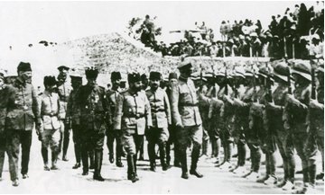

Cemal Paşa’nın Irak harekâtına ve Sina cephesinde yapılacak bir taarruza karşı muhalefeti öncelikle tamamen maddî ve fikrimce de haklı bir endişenin mahsulüydü. Bu arada herhalde şahsî bir sebep de rol oynamış olsa gerektir. Başlangıçtan itibaren ve görünür bir sebep olmaksızın iki adam, -General von Falkenhayn ve Cemal Paşa– arasında bir ayrılık vardı; birbiriyle münasebetleri, ilk karşılaşmadan itibaren gergin ve gayr-i dostaneydi. Cemal, Kilikya’nın, Suriye’nin ve Filistin’in yalnız tacı eksik kralı olarak, Osmanlı Devleti’nin Arap vilâyetlerindeki yüksek bir komutanlığının Alman Generali von Falkenhayn’a verilmesiyle mevkiinin fena halde sarsılacağından haklı olarak korkuyordu.
Cemal, Irak harekâtının maksatsızlığı hakkındaki, şahsî mütalâasını bir defa daha açıklamak için Ağustos’un ortasında İstanbul’a gitmişti. İstanbul’a ulaştığında kendisine Alman Genel Karargâhı’nın bir davetnamesi verildi. Bu davetnamenin gönderilmesine Enver’in sebep olduğu hakkındaki tahminler doğru olabilir. Falkenhayn’la Cemal arasındaki emir ve komuta yetkilerinin sınır altına alınması büyük zorluklar doğurduğundan bu meselenin Cemal’in olmadığı bir zamanda çözülmesi şüphesiz daha kolay olacaktı. Herhalde Cemal Almanya’dan döndüğü vakit bir emrivaki karşısında kalmıştı.
General von Falkenhayn’ın tesiri altında Enver, Irak harekâtının tehirine ve Sina cephesinde mümkün olduğu kadar çabuk bir büyük taarruz hareketinin yapılmasına kesin olarak karar vermişti. Bu harekâtın idaresine General von Falkenhayn’ın emri altında Yıldırım Ordular Grubu Komutanlığı’nı memur etmişti. Bu harekâtın icrası için ordular grubunun emrine şu birlikler verilmişti: Başlangıçta Irak harekâtına tahsis edilen ve Halep’te toplanmakta olan Fevzi Paşa[16] komutasındaki 7. Ordu[17] ve Sina cephesindeki kuvvetlerden benim komutam altında teşkil edilen 8. Ordu.

Bahriye Nazırı Cemal Paşa ve Alman Generali Falkenhayn Kudüs’te askeri denetliyorlar (1915).
Şimdiye kadar Cemal Paşa’nın komutası altında bulunan 4. Ordu lağvedilmişti. Cemal yalnız Kilikya, Suriye ve Hicaz’da başkomutan olarak kalmış ve ayrıca bu durumda General von Falkenhayn’ın komutası altındaki Ordular Grubunun âdeta umum menzil müfettişi vazifesini almış ve Ordular Grubunun muhtaç olduğu iaşe ve ikmal maddelerini temin edip hazırlayacaktı. Bu işe gerekli olan paralar da kendisine von Falkenhayn tarafından gönderilecekti. Bir uzlaşmanın bütün zaaflarını ihtiva eden bu çözüm şekli, mağrur Cemal için öldürücü bir hakaret ve ağır bir küçülme oldu.
Dehşetli bir isyanla evvelâ kendi gıyabında tertip edilmiş olan bu komuta değişikliklerine bütün enerjisiyle karşı gelmek istemişti. Fakat bu mücadelede Enver daha kuvvetli çıktığından, Cemal dişlerini gıcırdatarak bunlara boyun eğmeye mecbur olmuş ve birkaç ay daha bu yeni durumda kendisine verilmiş olan mevkii muhafaza ettikten sonra komutanlıktan çekilmiş ve İstanbul’a giderek tekrar Bahriye Nezareti’ni idareye başlamıştı. Kısa devam eden müşterek çalışmaları esnasında Cemal ile von Falkenhayn arasında sürekli nahoş ve işe faydası olmayan anlaşmamazlıklar zuhur etmişti. General von Falkenhayn’ın Suriye’ye ulaşmasını haber veren bir İngiliz gazetesinin, Cemal ile Falkenhayn’ın arasındaki anlaşmazlıktan dolayı, bu değişikliğin kendileri için hiçbir şekilde endişe verici olmadığına işaret etmesi çok dikkate değer bir meseleydi. 20. Kolordu Komutanı Albay Ali Fuat’a (Cebesoy), emir ve komutadaki bu değişikliği haber verdiğim zaman, kendisi son derece üzülmüş ve bana şöyle demişti: “Eğer kendi iaşemizi kendimiz temin etmezsek aç kalırız. Cemal’in emrinden çıktıktan sonra, Cemal artık bizimle ilgilenmez ve Enver’in bütün emirlerine ve vaatlerine rağmen, artık bize bakmaz; aksine yalnız kendi emrinde kalan Suriye ve Hicaz’daki birliklere bakar. Bizim memleketimizde hal böyledir!” Orada bulunan bütün yüksek rütbedeki Türk subaylar da Ali Fuat’ın bu sözlerini tasdik etmişlerdi.
Cemal, Eylül sonunda emir ve komutadaki bu yeni tertibi, şimdiye kadar emri altında bulunan bölgelere bir genelgeyle bildirdiği vakit bu genelgenin son cümlelerinde şöyle demişti: “Bu emrin tatbik ve icrasında yüce Allah, Yıldırım Ordular Grubu’na ve onun emri altında bulunan cesur kıtalara yardımcı olsun!”
General von Falkenhayn Almanya’dan beraberinde 100–150 kişi kadar Alman subay ve memurları getirmişti. Bunların bir teki bile Türkiye’yi ve Türk ordusunu tanımıyordu. Yalnız uçak birliği komutanı, cephemizdeki 300 numaralı uçak müfrezesi komutanı olarak bulunduğu için, bizimle birlikte savaşmıştı. Von Falkenhayn, kendi tabiriyle Türkleşmiş olarak kabul ettiği bütün unsurları maiyetinden uzaklaştırmıştı. Türkleşmiş dediği kişiler; tecrübe sahibi olmuş, doğuda dikkafalılıkla hareket edilemeyeceğini öğrenmiş, müttefikimizin kendine has olan tarzını ve cephenin özel şartlarını hesaba katmakta olan Alman subaylarıydı. General von Falkenhayn da açlık, susuzluk, iklim ve müttefikimizin kendine has tarzının kendi emir ve iradesine ve büyük enerjisine galebe çaldığını görmek suretiyle bu tecrübeyi bizzat kendi de edinmişti.
Ordular Grubu subaylarının, ekseriyetle yerine getirilemeyecek emirleri ve iyi niyetle verildiği halde cephemizin karakterini hesaba katmayan nasihatleri başlangıçta bizde yalnız bir tebessüm doğurmuştu; fakat zaman geçtikçe bunlar gerek benim gerekse maiyetimdeki subayların sinirlerine dokunmaya başlamış ve müttefikimizin nezdinde Alman komuta makamının çalışma tarzı hakkında ekseriyetle çok açık hayretler uyandırmıştı.
Grup Komutanlığı’nın vermiş olduğu bir veya diğer bir emrin yerine getirilemez olduğunu ve meselâ hazırlık mevziinde bulunan bir tümenin bulunduğu yerde su olmamasından veyahut grup levazım âmiri grup başhekimi veya veterinerinin uygulamak istediği Alman talimatnamelerinin cephemize tatbik edilemeyeceğini hemen her gün Grup Komutanlığı’na haber vermek bana çok güç geliyordu. Daha henüz Halep’te oturmakta olan Ordular Grubu subaylarının vazifelerinin ifasının ellerinde işe yarayan harp sahnesi haritalarının bulunmamasından dolayı son derece güçleşmiş olduğunu takdir etmiyor değildim. Ancak gerek pek çok takdir ettiğim Ordular Grubu Kurmay Başkanı Albay von Dommes, gerekse Ordular Grubu Karargâhındaki diğer subaylara hiç olmazsa cepheye bir kere gelerek cephemizdeki hal ve şartların, Alman nizam ve talimatnamelerinde esas alınmış olan cephelere göre bambaşka olduğuna şahsen kanaat getirmeleri hususunda yaptığım pek çok müracaatıma daima bu subayların Halep’te yerlerinden ayrılmalarının mümkün olmadığı sebep gösterilerek red cevabı verilmişti. Verdiği talimatlar buradaki gerçeklere uymayan Grup levazım amirine, kendi Alman levazım şefimi buradaki hâl ve şartlar hakkında bilgi vermek için Halep’e yollamak hususundaki tekliflerim de reddedilmiş ve sebep olarak Grup levazım amirinin ne yapacağını çok iyi bildiği söylenmişti. Ukalalık ve itaatsizlik için değil, ahvalin arzetmekte olduğu mecburiyetler karşısındaki hareket tarzımızı izah etmek üzere Albay Herrgot’u Halep’e göndermiştim. Kendisinin ağır bir dizanteri vakası geçirmiş olduğundan hava değişikliğine ihtiyacı vardı. Döndüğünde bana Ordular Grubu’ndaki subaylar arasında çok az ilgi gördüğünü ve bu işte muvaffakıyet elde edemediğini bildirmiş ve bundan başka bilhassa Halep’te gerek mevcut durum gerekse Türk kıtalarının harp kıymeti hakkında yanlış fikirler beslendiğini anlatmıştı. Bu husustaki yanlışlıkların meşum neticeler doğurabileceğini düşünerek 20 Ekim tarihinde aşağıdaki raporu Ordular Grubu Komutanlığı’na vermiştim:
“24. Tümen’in harp kıymeti hakkında yanlış bir tahmin yapılmaması için bu tümenin Haydarpaşa’yı kol ve katarları hariç olmak üzere 10.057 erle terk ettiği halde cepheye yalnız 4.635 erle geldiğini bildiriyorum; bu birliğin yaklaşık % 19’u yolda hastanelere teslim edilmiş, % 24’ü firar etmiş ve % 8’i de izinden dönmemiş veyahut diğer tümenlerin birlikleri tarafından yakalanarak alıkonulmuştur.
Son zamanlarda soğuk algınlığından hastalananların adedi dikkat çekecek derecededir. Meselâ, ayın altısında 84, yedisinde 115’tir. Tümenin 5 subay ile 516 eri halen hastanelerde tedavi edilmektedir. Hastalık neticesinde bu kadar zayiatın meydana gelme sebebi tümene, cepheye hareketinden önce hiç battaniye verilmemiş olması ve yalnız eratın % 33’üne yetişecek kadar beylik ve ancak üç ere çadırbezi dağıtılmasıdır. Bu hâl ise, askerlerden birçoğunun, hastalanmasına sebebiyet vermiştir. Geceler soğuk ve rutubetlidir. Bundan dolayı, eğer kısa zamanda buna bir çare bulunmazsa, hastalananların sayısı gittikçe artacaktır. Bu kadar kötü olmamakla beraber İstanbul’dan gelen diğer takviye kıtalarında da aynı hâl vardır. Bavyeralı Yarbay Willmer tarafından komuta edilen 24. Tümen, makineli tüfek birlikleri olmaksızın cepheye gelmiştir. Demiryollarının yükünü azaltmak maksadıyla bu birlikler karadan gelmiş ve birçok haftadan sonra tümene katılabilmiştir. Tümenin piyade alaylarında muharip kuvvet ortalama olarak 750 tüfekten ibarettir”.
Üçüncü Gazze Muharebesi’nin başlamasından bir gün önce Beyti Hanun istasyonunda bir Türk–Alman ağır topçu taburu indirilmişti. Halep’te bu taburun komutanına, cephede ciddî muharebeler başlayıncaya kadar sayısı çok olan acemi erlerini talim ve terbiye etmek için yeterince zaman bulacağı söylenmişti. Bunun üzerine tabur komutanı yetişmiş erlerini koşum hayvanlarıyla birlikte pek uzun haftalar süren kara yolundan yürüttürmüştü. Kendisi de cepheye koşum hayvanları ve yetişmiş erleri olmaksızın gelmişti.
Eylülün son günlerinde karargâhımla Huç’tan Huleykat’a geçmiştim. Burası, ikinci mevziimizde, sahilin 12 kilometre doğusunda Vadi Hesse’nin kuzeyinde, çok fakir bir Arap köyü idi. Şimdiye kadar ordu komutanlığının karargâhı cepheye o kadar yakındı ki, birinci mevziin tahliyesinde ordu komutanlığı da burasını bırakmak mecburiyetinde kalacak ve bilhassa ciddî bir anda bütün irtibatları kesilmiş olacaktı. Cepheye her gün yaptığım ziyaretler için çok büyük gidip gelme mesafeleri kat’etmek mecburiyetinden ileri gelen mahzura katlanmak mecburiyetindeydim. Yapılmış yolları olmayan derin kumlu zeminde otomobil bile ancak yavaş ilerleyebiliyordu. Huleykat’tan Bîrüs-sebi’ye kadar olan yaklaşık 60 kilometre için tam üç saat sarfetmek mecburiyetindeydim. Çok şiddetli sıcaklarda kesif ve ağır bir toz bulutu ile kaplanan otomobil yolculuğu zahmetli ve yorucuydu.
Türk hücum bölüğünün talim ve terbiyesini vermiş olduğum Alman Binbaşı Kienel’in elde etmiş olduğu randıman çok memnuniyet vericiydi. Eylül sonunda bu bölükte yaptığım bir teftişte iyi idare ve bakım temin edilmek şartıyla cesur, itaatkâr, kanaatkâr Anadolu erlerinden neler elde edilebileceğine bir defa daha şahit olmuştum.
Ağustos ve Eylül aylarında İngilizler, atlı birlikleri ile Bîrüssebi’nin batı ve güney cepheleri önünde bir sürü büyücek gösterişler yapmışlardı. Onlar bu gösteriş hareketleri sırasında araziyi keşfetmişler, ölçümler, su sondajları ve buna benzer işler yapmışlardı. Bu gibi cebrî keşif hareketleri, İngilizlerin Bîrüssebi’ye taarruz için hazırlıklar yaptığını, yakın bir ihtimal olarak gösteriyordu. Bu şartlar altında zayıf olan Bîrüssebi garnizonunun takviye edilmesi gözardı edilemezdi. Bunu temin etmek görevini, 16. Tümen’in şimdiye kadar olan mevziinin batıdaki yarısına komşusu olan 26. Tümen’e vermiştim. Bu mevziin 16. Tümen’e isabet eden ve doğal olarak çok kuvvetli olan geri kalanı zaruret halinde bir alay tarafından müdafaa edilebilirdi. Bu şekilde 16. Tümen’in bir alayını üç batarya ile Bîrüssebi’ye göndermem mümkün olmuş ve bu tümenin diğer bir alayını üç süvari bölüğü ve iki sahra bataryasıyla Bîr Ebu Rukeyk’e nakledebilmiştim. Bu müfreze burada Kavuka ile Bîrüssebi arasındaki gediği kapatıyordu ve icabında süratle Bîrüssebi garnizonunu takviye edebilecekti. Bîrüssebi müdafaasının idaresini Albay İsmet’e vermiştim. İsmet, cephede bir müddet misafir olarak kaldıktan sonra Enver son ziyaretinde kendisini birlikte İstanbul’a götürmüş ve Eylül nihayetinde kendisini tekrar bize göndermişti. İsmet’in emri altındaki birlikler “3. Kolordu” adını almıştı.
İngiliz ve Türk keşif kolları arasında meydana gelen bir çatışma sırasında İngiliz istihbarat servisi şefi Binbaşı Meinertzhagen kendine ait harita çantasını kaybetmişti. Bu çantada miktarı ehemmiyetsiz olmayan para ile bir sürü hususî mektuplar arasında birçok enteresan notlar bulunuyordu. Bu notlardan, İngilizlerin mevziimize yapacakları taarruzu senenin nihayetine veyahut yeni senenin başına tehir ettikleri, esas taarruzlarını Gazze’nin güneybatısına yöneltmek istedikleri, karma bir tugayı Gazze’nin kuzeyinde karaya çıkarmaya niyet ettikleri, İngilizlerin mevziimize yapacakları taarruzla beraber Suriye sahilinde de Fransızların karaya asker çıkaracakları ve İngilizlerin sol kanadımızdaki araziyi büyük süvari birliklerinin harekâtına elverişli görmedikleri ve aksine bu mevkiye karşı sırf gösterişler yaparak kuvvetli kıtaları bu tarafa çekerek bizi aldatmak istedikleri anlaşılıyordu.
Bu çantanın kaybolmasında düşman tarafından gayet ustaca tertip edilmiş bir aldatma manevrası mı, yoksa bizim için son derece mesut bir rastlantı mı söz konusu olduğu tabiidir ki bizi çok ilgilendiren bir mesele olmuştu. Bu konudaki görüşlerimiz başlangıçta farklı farklıydı. Fakat sonunda bunun düşman tarafından tertip edilmiş bir hile olduğunda birleşilmişti. Gerek İngiliz gerekse Türk harp edebiyatında benim, Binbaşı Meinerzhagen’in harita çantasından öğrenilen bilgilere aldanarak; biricik ihtiyatım olan 7. Tümeni Üçüncü Gazze Muharebesi’nden önce Bîrüsse-bi’ye göndereceğim yerde sağ kanadımızın gerisinde hazır bulundurduğum yönündeki iddia yanlıştır. Meinertzhagen çantasında bıraktığı notlarda taarruzun sene sonunda veyahut gelecek senenin başında yapılacağını zikretmekle bir hata yapmıştı. Nitekim gelişen olaylar ve 26, 27 ve 28 tarihlerinde elde edilen keşif neticelerinden Bîrüssebi ve Gazze üzerine bir taarruzun yapılmak üzere olduğu anlaşılmakta olduğundan elde edilen çanta içerisindeki bilgilerin aldatmak maksadıyla tertip edilmiş olduğundan şüphe edilemezdi. 7. Tümeni Bîrüssebi’ye nakletmek için zaten vakit vardı, fakat ben, gerimiz bir İngiliz çıkarma hareketiyle tehdit edilsin edilmesin, ihtiyatımı sağ kanat gerisinde tutmak mecburiyetindeydim.
Ben, Refet’in komuta ettiği her iki tümeniyle muharebeye yalnız 6.800’ü aşkın bir kuvvet sevkedebileceğine ve hattı uzun, düşmanın yoğunlaştırılmış ateşine maruz mevzilerinin, Albay İsmet’inkinden daha evvel takviye edilmeye ihtiyacı olduğuna kanaatim vardı. Her şeyden evvel Bîrüssebi’yi kaybetmeye Gazze’yi kaybetmekten daha kolay razı olabilirdik. Düşmanımız sağ kanadımıza mahvedici bir darbe vurmaya muvaffak olduğu takdirde, geçilmesi zor ve suyu olmayan Yuda Dağlarına atılmış ve bütün menzil teşkilatımızın dayandığı demiryolundan uzaklaştırılmış olacaktık. Buna karşılık Bîrüssebi kaybedildiği takdirde daima demiryolu boyunca sağ kanadımızı denize dayayarak kuzey istikametinde geriye çekilebilirdik.
Üçüncü Gazze Muharebesi’ni kaybetmemize sebep, ihtiyatların yanlış mevkiye yerleştirilmesi değil, aksine 1917 senesinin Ekim ayı sonunda elimde bulunan 23.000 tüfek, 1.400 mızrak ve 191 toptan –bunlardan 38’i ağır– oluşan bir kuvvetle hemen 50 km. genişliğinde bulunan bir mevkii çok üstün düşman kuvveti karşısında o vakitki Türk tümenlerinin çok zayıf olan makineli tüfek teçhizatıyla başarıyla müdafaaya imkân bulunmamasıdır. Türk tümenlerinin muharebe kuvvetlerinin azlığı, her türlü derinliğine tertibat almaktan bizi vazgeçirmek mecburiyetinde bırakmıştı. Hâlbuki bu derinliğine alınacak tertibat başarılı bir müdafaa için esas şarttır ve öyle kalacaktır.
Üçüncü Gazze Muharebesi’nden önce komutam altındaki birlikler aşağıdaki gruplara bölünmüşlerdi:
Gazze’de Albay Refet’in komutası altında 22. Kolordu (53. ve 3. Tümenler) bulunmaktaydı. En Namus ile Kavuka arasındaki kuvvetli mevzileri Albay Ali Fuat’ın komutası altındaki 20. Kolordu (54. ve 26. Tümenler ile 24. Tümenin üç taburu) müdafaa ediyordu ve 16. Tümen’in üçte ikisi ihtiyat olarak Tellüşşeria civarında Ali Fuat’ın emrinde bulunuyordu. Bîrüssebi’nin müdafaası Albay İsmet komutasındaki 3. Kolordu’ya (27. Tümen, 16. Tümen’in üçte biri, 24. Tümen’in üçte biri ve 3. Süvari Tümeni) bırakılmıştı.
Sağ kanat gerisinde Beyti Hanun civarında 7. Tümen’le Ebu Rukeyk civarında 24. Tümen’in üçte biri emrimde hazır bulunuyordu. Avrupa cephelerindeki muharebelerde çok iyi bir nam bırakarak kendini fazlasıyla göstermiş olan 19. Tümen, Üçüncü Gazze Muharebesi’nin başında mevcudunun üçte ikisiyle Sina cephesine gelmiş ve Cemame civarında hazır bulundurulmuştu. Bu tümen de ordu komutanlığının emrindeydi.
Kudüs–Bîrüssebi yolunu kapatmak için Halilürrah-man’da bulunan 12. Depo Alayı Zahiriye’ye alınmıştı. Alman Binbaşı Kielh tarafından komuta edilen bu alayın vazifesi cephemizdeki kıtaların zayiatını dolduracak acemi erlerini talim ve terbiye etmekti. Bir muharebede sırasında bu alayın ancak küçük bir kısmı, yani eğitici kadrosu olan çekirdeği işe yarıyabilirdi.
Remle’ye ikinci bir Alman uçak bölüğü gelmişti. Bu bölüğün mürettebatı, meydan muharebesi başlamadan önce, henüz harekât sahasının hâl ve şartlarını kavrayabilecek kadar zaman bulamamışlardı.
General von Falkenhayn cephemizin doğudaki yarısının komutasını 7. Ordu Komutanı Fevzi Paşa’ya vermek niyetinde bulunuyordu. Ben de cephenin batı yarısının komutanlığını muhafaza edecektim. Her iki bölgenin ara hattı kabaca Et Tîne–Bîrüssebi demiryolunu takip edecekti. Bu yeni tertibatın alınmasını, General von Falkenhayn, Halilürrahman’a ulaşan Fevzi Paşa’nın, kendi komutanlığıyla cephe arasında gerekli olan tel irtibatını kurduktan sonra emretmek istiyordu.
Ordular Grubu Komutanlığı muharebenin başında daha hâlâ Halep’te, cephenin yaklaşık 600 km. gerisinde bulunuyordu. Büyük bir talihsizlik de, tam muharebenin başlangıcında 160 kamyondan oluşan nakliye kolunun benzin yetiştirilmemesi yüzünden hareket edememesiydi. Bütün kamyon nakliyatının bir müddet için durması, Ebu Rukeyk civarındaki büyük demiryolu köprüsünün top ateşinden ağır şeklide hasara uğraması neticesinde, Bîrüssebi’ye demiryoluyla yapılan bütün nakliyatın da durmasıyla, bir kat daha fecaat göstermişti.
Gök de bize karşı isyan etmişe benziyordu. 27 Ekim akşamı, yani hiç beklenilmeyen bir zamanda, bulutlardan boşanırcasına yağmur getiren bir fırtına kopmuştu. Sular yalnız mevziimizde ehemmiyetsiz olmayan tahribat yapmakla kalmamış, vadilerde hiç olmazsa birkaç gün kalan su birikintileri, düşmanlarımızın kendi hayvanlarını sulamalarına da yaramıştı.